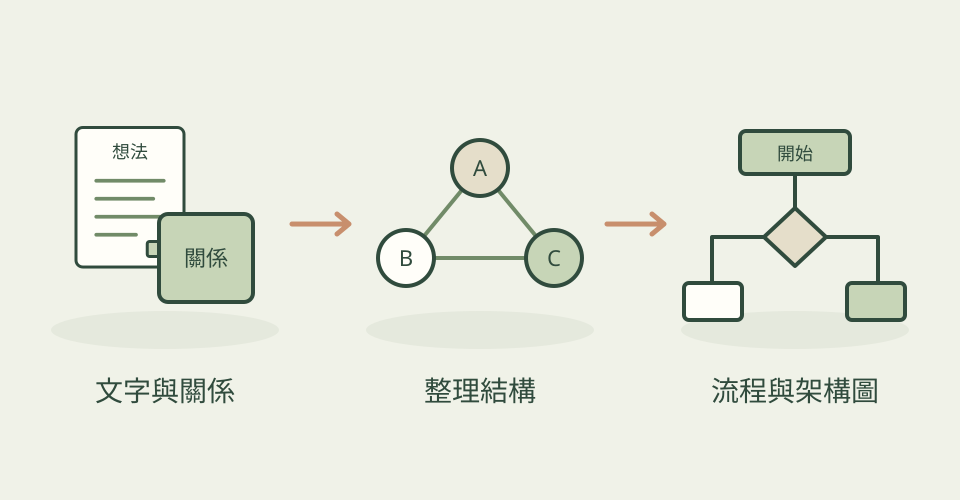

會議裡的流程、系統之間的關係，或方案的比較，都需要讀者一眼找到方向。Diagram Design 提供圖表類型與排版規則，讓 AI 依內容選擇合適的圖，而不是把所有事情都塞進同一種框。
它怎麼幫忙
圖形以單一 HTML 與 SVG 組成，可使用既有品牌的配色與字體。專案也提供匯入與匯出工具，方便接續既有流程圖，或把成品放進簡報。
三步驟看懂這個技能

把散落的文字關係，整理成可編輯的 SVG 流程與架構圖。
功能示意・本站繪製 放大查看可以這樣開口
這是一個可依需求修改的委託範例。
把「提案、草稿、美術審查、修改、交付」畫成流程圖，標出退回修改的路徑，沿用我們品牌的綠色與中文字體。
適合什麼工作
適合簡報、流程溝通、產品文件與視覺編輯。
開始之前
- 準備工具
- 支援 Agent Skills 的 agent；不同匯入、匯出工具的需求請依專案說明設定。
- 使用成本
- 技能本身可取得，agent、字體或其他外部資源依你使用的服務計費。
- 交付內容
- HTML＋SVG，另可依工具匯出圖片
- 先留意
- 作者提供的範例不代表本站已實際測試所有圖表類型。
最近的觀察
2026-10-28：2.6.136 新增橫向箱形圖，讓三至八組資料共用同一把尺，比較中位數、集中範圍和離群值。例如比較五款遊戲的關卡完成時間，不只看平均值，也能看出哪款遊戲的玩家差異最大。這是 Scatter 類別的新變體，並非另外增加一個頂層圖表類型。隨附檢查器會核對箱體、中央線、鬚線和離群點是否對得上資料，並限制一組重點色；不應為排版好看而挪動數據位置。同批修正主連接線與箭頭顏色不一致、單引號 SVG 屬性漏檢、爆炸圖 CSS 位移漏檢，以及 Windows 換行造成檢查測試失敗。原有 draw.io 角括號文字與 Excalidraw 群組匯入修正仍保留。成本與工具條件沿用原文；本次核實文件及差異，未執行候選檢查器。 2026-11-04：2.6.137–2.6.141 修正既有圖檔匯入：Mermaid 較長點線不再誤讀而整檔失敗；draw.io 表格列不再被當成另一張表；Excalidraw 優先保留原始文字，避免窄框中的 PostgreSQL 被錯拆成多行。適合整理現有流程或架構圖的編輯與設計師，原有工具與成本條件不變。OpenAI 目錄快照只是待核准提案，不當成已完成功能。本站核實原始差異，未執行匯入工具。 2026-11-07：2.6.142 加強時序圖檢查，會驗證 OAuth 一般回傳線和 ALT 條件文字是否真的可見，避免檢查只找到標記卻漏掉被隱藏的條件。適合畫登入流程的設計者；這是檢查器修正，沒有新增圖表類型，沿用原有 Python 與製圖工具。 2026-11-09：2.6.147 接受舊式 Mermaid stateDiagram 標頭，保留 ER 圖的實體別名與含空格名稱；SVG 匯出也修正 HTML 數字字元參照的保留。例如把舊專案的狀態圖、帶中文名稱的資料表關係圖轉成可編輯圖，不必先手工改標頭或丟掉顯示名稱。箱型圖檢查新增對不可見圖形、被樣式藏起來標籤的攔截，減少資料有綁定但畫面看不到的情況。沿用既有 Python 與繪圖環境，不新增生成 API 費用；本站核對程式差異，未執行候選工具。 2026-11-10：2.6.153 新增 PlantUML 時序圖與類別圖的內容匯入與重新排版，可把舊技術文件改成較清楚的提案圖；保留關係、訊息順序與群組，重新安排版面，不沿用原本配色。只支援這兩類，不代表所有 PlantUML 圖都能轉。依賴圖新增弧線變體：套件排在同一條線上，用弧高呈現跨越的間距，方便找出跨層依賴；這是既有依賴圖的變體。幾何檢查器現在隨技能一起提供，並增加框內文字寬度檢查；Mermaid ER 也修正文字型基數別名和點線連結。需 Python 與既有繪圖／匯出環境，沒有新增必要的付費生圖 API；本站核對來源，未執行候選程式。
作者與來源
本文依作者公開說明整理，沒有實際執行這個專案。功能插圖由本站繪製，原作者範例另行標示；並非本站執行技能的測試結果。GitHub 星數為專案總量，觀察時間為 2026年11月11日 08:34（台北時間）。
與前次快照相比增加 231 星；這不是 GitHub Trending 排名。